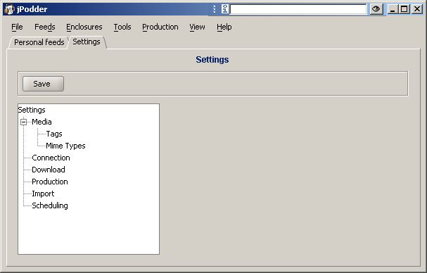

The settings view allows you to configure and customize jPodder to your personal needs. But before you start please check out the Feeds & File Handling to ensure you understand what jPodder and podcasting is all about.

The settings view displays these elements & categories:
| 1. | Save | if pressed will make the current settings active in the application |
| 2. | Media - Tags | allows you to select and change the tags you want to rewrite for all podcast |
| 3. | Media - Mime Types | displays the current Mime Type and application association |
| 4. | Connection | allows you to configure a web proxy as well as the web timeouot |
| 5. | Production | lets you choose as recording application |
| 6. | Import | lets you import feeds from an iPodder installation on your box |
| 7. | Scheduling | lets you customize your feed inspection and enclosure download schedules |